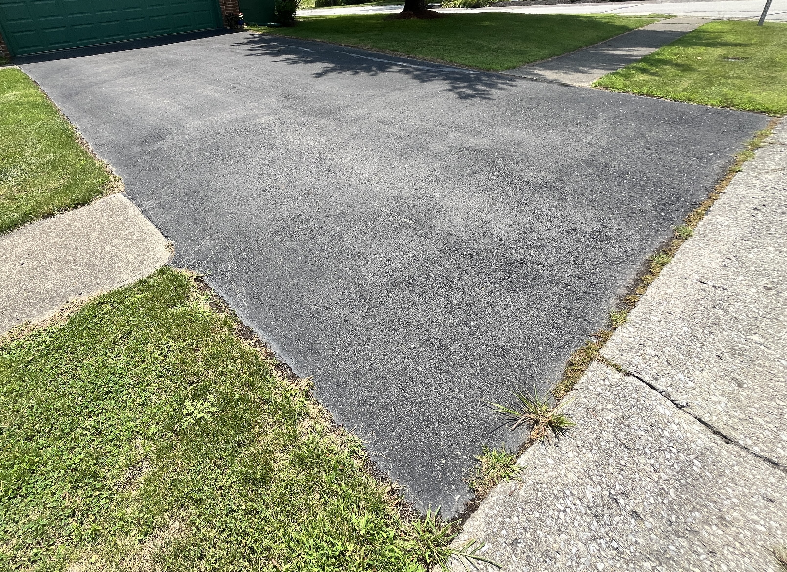
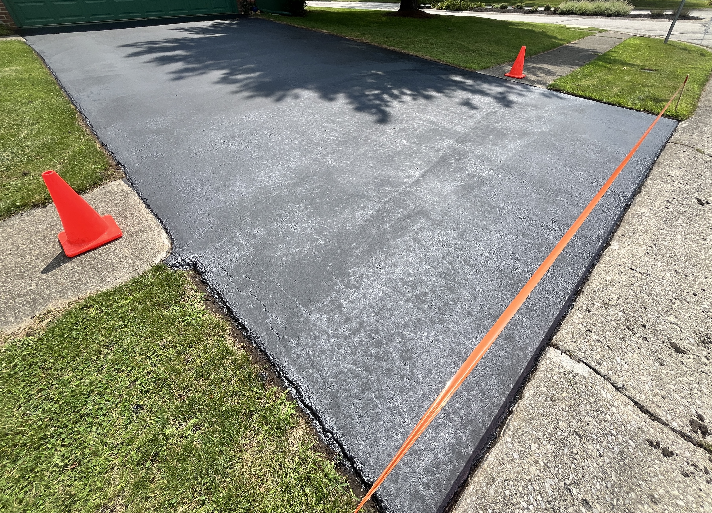

Professional sealcoating that shields your driveway or parking lot from UV damage, water, and cracks — at a price that makes sense.
We cover everything your asphalt needs to stay protected, looking sharp, and lasting longer.
We apply a professional-grade coal tar or asphalt-based sealer that creates a protective barrier against gas, oil, UV rays, and moisture — extending the life of your driveway by years.
Keep your commercial property looking professional and reduce long-term maintenance costs. We handle lots of all sizes with commercial-grade equipment for fast, uniform coverage.
Small cracks become big problems fast. We clean and fill cracks with hot-pour rubberized filler before they spread, preventing water intrusion and costly repaving.
Fresh, crisp parking lot markings improve safety and make your property look maintained. We handle handicap markings, fire lanes, directional arrows, and standard stalls.
Potholes are a liability hazard and an eyesore. We patch and repair asphalt damage quickly so your surface is smooth, safe, and ready for traffic.
From single-family driveways to large commercial parking facilities, we bring the same attention to detail and quality materials to every job, big or small.
See the difference professional sealcoating makes.


We're not a national franchise — we're your neighbors. With 4 years of hands-on industry experience, we bring professional-grade results at honest prices.
We only use commercial-grade sealers — no watered-down product. You get a thicker, longer-lasting coat every time.
No hidden fees, no upsells. You get a straight quote upfront, and that's what you pay. Period.
We live and work in Indianapolis. Our reputation depends on your satisfaction — so we treat every job like it's our own property.
Most residential driveways are completed in a single day. We respect your time and keep your schedule in mind.
Fully licensed and carrying complete liability insurance so you're protected no matter what.
If you're not happy with the work, we make it right. Simple as that.
Getting your asphalt protected is easier than you think.
Contact us online or by phone. We'll come out, assess your asphalt, and give you a no-obligation written estimate — usually within 24 hours.
We clean the surface, blow out debris, and fill any cracks or damaged areas. Proper prep is what separates a lasting job from a short-term patch.
We apply two coats of commercial-grade sealer using professional spray or squeegee equipment for even, complete coverage.
We give you clear drying instructions (typically 24–48 hours). Then your asphalt is protected, refreshed, and ready to impress.
A fresh sealcoat doesn't just protect — it transforms. Faded, cracked asphalt becomes a deep, rich black that adds serious curb appeal.
Get Your Free QuoteA professionally applied sealcoat typically lasts 3–5 years depending on traffic, weather exposure, and the condition of the asphalt. We recommend resealing every 2–3 years for optimal protection.
We recommend waiting 24–48 hours before driving on a freshly sealed surface. Foot traffic is okay after about 4–6 hours. We'll give you exact guidance based on the weather conditions on the day of your job.
Yes — new asphalt should cure for at least 6–12 months before its first sealcoat. After that, sealing helps preserve the flexibility of the asphalt and dramatically slows the aging process.
Late spring through early fall is ideal — we need temperatures above 50°F and no rain for 24 hours after application. In Indiana, May through September is our busy season, so book early!
Yes, we stand behind our work. We offer a satisfaction guarantee on every job. If you're not happy with the results, contact us and we'll make it right.
Pricing depends on the size and condition of the surface. A typical residential driveway ranges from $150–$400. We provide free, no-obligation estimates — contact us and we'll give you an exact quote.
Fill out the form and we'll get back to you within 24 hours with a free, no-obligation estimate. Or call us directly during business hours.
We'll respond within a few hours during business hours.